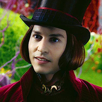
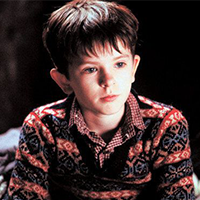
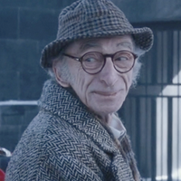
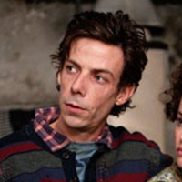
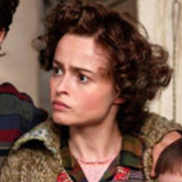

찰리와 초콜릿 공장 Charlie And The Chocolate Factory / 2005
전 세계 누구에게나 사랑 받는 세계 최고의 초콜릿 공장인 '윌리 웡카 초콜릿 공장'은 비밀의 공간이다
신비로운 공장의 공장장인 윌리웡카는 어느 날, 5개의 초콜릿에 행운의 황금티켓을 숨기고
티켓을 가진 어린이 다섯 명에게 자신의 공장을 공개하며 모든 제작과정을 보여주겠다는 선언을 한다
세계 각국에서 행운의 당첨자들이 나타났고 우연히 돈을 주워 산 초콜릿에서 당첨 된 찰리까지
웡카의 초콜릿 공장을 탐험하게 되는데...





조니 뎁
윌리 웡카 역
윌리 웡카 역
프레디 하이모어
찰리 버켓 역
찰리 버켓 역
데이빗 켈리
조 할아버지 역
조 할아버지 역
헬레나 본햄 카터
엄마 버켓 부인 역
엄마 버켓 부인 역
노아 테일러
아빠 버켓씨 역
아빠 버켓씨 역